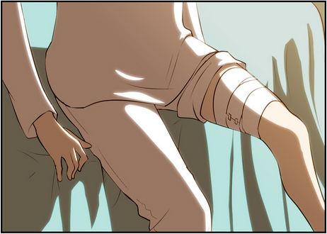
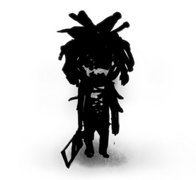

Me desperté en la cama de un hospital, había ocurrido un terrible accidente y los tipos del canal de noticias lo repasaban todos los días, el bus colisiono dentro del túnel, dejando a 8 pasajeros muertos incluyendo al conductor, dejándome únicamente a mí y a otro pasajero con vida. Las personas dicen que yo estuve en coma por 2 días por el terrible daño a mi pierna y una gran herida en mi cabeza; fue un gran accidente pero, según ellos, sobreviví gracias al cinturón que no me dejo salir volando por la ventana. Trate de convencer al doctor, a las enfermeras y también a los oficiales de seguridad que continuaran investigando, que siguieran buscando al niño que vi en el bus… pero… nadie me creía.
El otro sobreviviente todavía está en coma, él está en la cama a la par de la que to estuve. Esta persona, probablemente haya visto lo que yo vi en el bus.

Hay una leyenda que describe como mataron a una familia en un pueblo donde gobernaba un señor que se hacía llamar rey, la familia fue acusada falsamente de traición por este rey. Uno de los integrantes de esta familia era un niño que apenas estaba empezando a hablar. El espíritu del pequeño, con apariencia de un cuerpo medio podrido, bajaba de la montaña y tomaba la vida de 10 personas, matándolos de la misma manera que mataron a su familia, dicen que lo hace así porque es lo último que vio antes de morir. Las personas del pueblo cuando se dieron cuenta de la verdad, colocaron una gran roca en el lugar donde la familia fue enterrada, y con esto el fantasma del niño no fue vuelto a ver.

Pero cuando el túnel fue construido, la piedra de la familia fue removida por quedar en el camino de la construcción. Con esto el fantasma del niño dejo de estar sellado y comenzó una vez más a realizar asesinatos.
El fin.